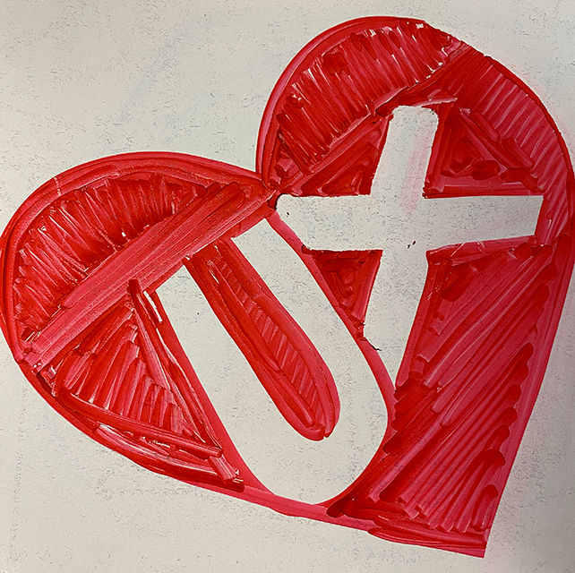

I've worked in the interactive design space for over 15 years. Over a million people use products that I have designed (Yep, I keep score). I always remember that problems need to be solved and things are meant to be used.
Skills
Interaction Design
Napkin Sketches, Wireframes, Prototypes, Accessibility
UX Research
User Research, User Testing, Personas
Product Design
User Stories, Requirement Gathering, UX Project Plans, Configuration Strategy, Accessibility
Information Architecture
journey maps, user flows, taxonomy
Graphic Design
Logos, Icons, Package Design, Animation, User Interface
Tools
Sketch, Balsamiq, Invision, Axure, Adobe Creative Suite, Microsoft Office Suite, HTML, CSS, Javascript, React